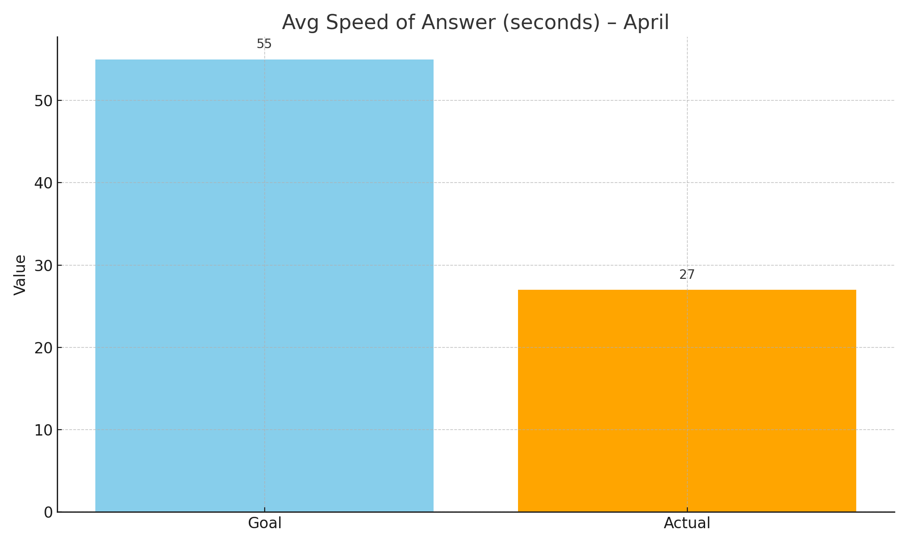

Hi, I’m Caleb, Help Desk Supervisor for internal operations.
Optimize IT service for the coming fiscal year.
Provide fast, effective IT support for user satisfaction.
Advance IT efficiency and innovation for future growth.
1. Increase first-call resolution by 10% by December.
2. Reduce ticket backlog by 20% by Q3 end.
3. Improve customer satisfaction score by 15% by June.
4. Decrease average response time by 25% by October.
5. Increase agent training hours by 30% by November.
1. Faster resolutions boost user productivity.
2. Fewer backlogs mean quicker responses.
3. Higher satisfaction ensures better IT experiences.
4. Lower response times reduce system downtime.
5. Trained agents provide more effective support.
SMART Goal: Increase First Call Resolution by 10% by December
We reached 73%, which is below our target of 82%. This shows we need to improve training and support tools to resolve more issues on the first call.
SMART Goal: Decrease Average Speed of Answer by 5% by June
We exceeded this goal significantly by reaching 27 seconds, compared to the 55-second goal. Great progress by the support team.
SMART Goal: Increase Customer Satisfaction Rating by 7% by March
We hit 86% which slightly surpassed our goal of 85%. Our service quality improvements are being noticed by customers.
SMART Goal: Decrease Call Abandonment Rate by 8% by July
We reduced the abandonment rate to 76%, under our 80% target. This indicates better queue management and quicker response.
SMART Goal: Reduce Ticket Backlog by 25% by August
We brought backlog down from 434 to 298, showing strong improvement in issue resolution speed.
We value input! Contact me at eragbonosakpolor@gmail.com or 226-337-0737.